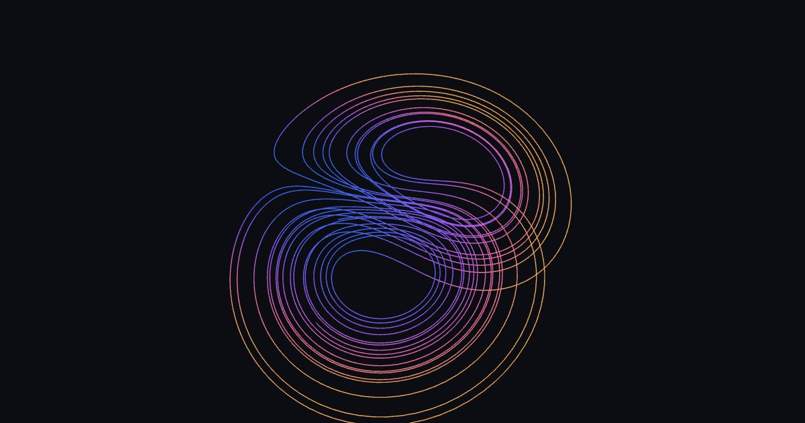

Math Explorer · Strange Attractors
Strange Attractors: the Lorenz attractor and chaos in 3D
Chaos you can watch: paths that never repeat, yet always stay on the same strange shape.

Start exploring Strange Attractors →
In 1963 Edward Lorenz ran a simple weather model and found that a tiny change in the starting numbers led to a completely different forecast: the butterfly effect. Yet the path it traced always stayed on the same butterfly-shaped figure, a strange attractor. Math Explorer traces 17 of these chaotic flows in 3D and measures how chaotic each one is.
You can release a swarm of points that start almost together and watch them spread across the attractor, and build 10 chaotic maps, such as the Clifford and the standard map, from millions of points. Every system here was checked to stay bounded and to be truly chaotic.
Things to try
- Watch the butterfly effect pull two nearly identical paths apart
- Release a swarm onto the Lorenz attractor
- Build the Clifford attractor from millions of points
- Slowly change the rule numbers and watch the shape morph
- 3D print an attractor's path
Start exploring Strange Attractors →